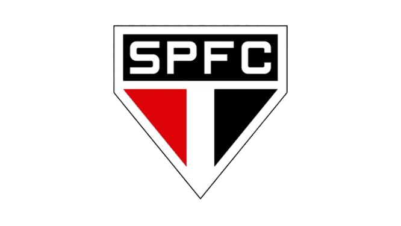

São Paulo Futebol Clube
O São Paulo Futebol Clube foi criado a partir da fusão entre o Clube Atlético Paulistano e a Associação Atlética das Palmeiras, em 1930. O início da história do SPFC se deu em função do Clube Atlético Paulistano, um clube de peso em São Paulo que não apoiava o profissionalismo do futebol. Isso levou alguns de seus jogadores a migrarem para a Associação Atlética das Palmeiras, que tinha um estádio próprio, mas enfrentava dívidas. Essa fusão deu origem ao São Paulo, no dia 27 de janeiro de 1930, embora por motivo simbólico (aniversário da cidade de São Paulo), o documento oficial tenha sido datado de 15 de janeiro de 1930.
Com muitos títulos conquistados desde a primeira década de sua existência, o São Paulo, na década de 1960, investiu na construção de seu gigantesco estádio: o Cícero Pompeu de Toledo, popularmente conhecido como Morumbi.
Uniforme e Outros Detalhes
O uniforme oficial do São Paulo é camisa branca, com duas listras horizontais em vermelho e preto, short branco e meias brancas com listras horizontais iguais às da camisa. O segundo uniforme é composto por short e meias pretas, acompanhados de camisa vermelha com listras verticais grossas em preto e finas em branco.
Títulos do São Paulo
- Campeonato Mundial de Clubes: 1992, 1993 e 2005;
- Copa Libertadores da América: 1992, 1993 e 2005;
- Copa Sul-Americana: 2012;
- Recopa Sul-Americana: 1993 e 1994;
- Supercopa Libertadores: 1993;
- Copa Conmebol: 1994;
- Copa Master da Conmebol: 1996;
- Campeonato Brasileiro: 1977, 1986, 1991, 2006, 2007 e 2008;
- Copa do Brasil: 2023;
- Copa dos Campeões Mundiais: 1995 e 1996;
- Torneio Rio-São Paulo: 2001;
- Copa dos Campeões Estaduais Rio-São Paulo: 1931, 1943, 1946, 1948, 1953, 1956, 1957, 1975, 1980, 1985 e 1987;
- Campeonato Paulista: 1931, 1943, 1946, 1948, 1949, 1953, 1957, 1970, 1971, 1975, 1980, 1981, 1985, 1987, 1989, 1991, 1992, 1998, 2000, 2005 e 2021;
- Supercampeonato Paulista: 2002;
- Campeonato Paulista Extra: 1934;
- Torneio Início do Campeonato Paulista: 1932, 1940 e 1945;
- Campeonato Paulista de Segundos Quadros: 1933, 1938 e 1940;
- Troféu Festival da APEA: 1931;
- Taça Competência: 1931;
- Taça Cidade de São Paulo: 1944;
- Taça Governador do Estado de São Paulo: 1980, 2006 e 2007;
- Campeonato Paulista de Aspirantes: 1943, 1944, 1945, 1946, 1947, 1953, 1954, 1955, 1960, 1962, 1976, 1989 e 1995;
- Copa Aspirantes: 1997.